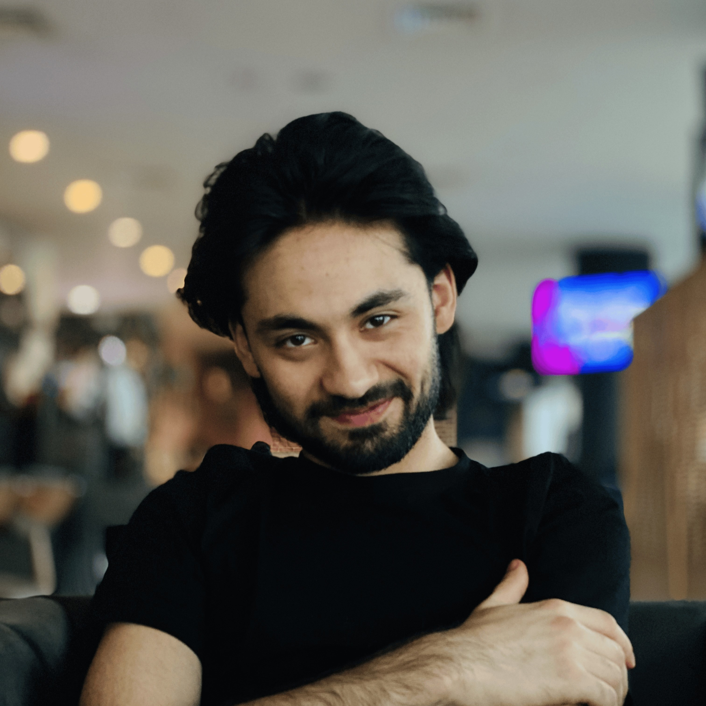
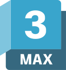
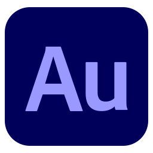

Zohib Sala
Environment & Technical Artist
Recent Games Design & Development graduate from the University of Greenwich (BSc Hons, 2:1) with a focus on 3D Environment Art, Technical Art and real-time development.
I enjoy creating game-ready environments, 3D assets and interactive experiences using Unreal Engine 5, Unity, Maya and Blender. My work combines artistic creativity with technical problem solving, from building environments and gameplay systems to improving workflows and player experience.
Alongside my studies, I gained industry experience as a 3D Artist at Squint Opera, contributing to projects including the Zayed National Museum and the Willy Wonka Experience, and as a Technical Artist at MatchUp Games, supporting gameplay development and production workflows for PowerUp Soccer.
I enjoy collaborating with multidisciplinary teams, learning new tools and continuously improving my skills in environment art, hard-surface modelling and real-time pipelines.
Open to opportunities in Environment Art, Technical Art and Real-Time 3D Production.
My Journey
My interest in game development started from a love of playing games as a child, but over time I became increasingly curious about how they were actually made. I often found myself wondering how characters and environments were created, how games achieved such detail and realism, and what happened behind the scenes to bring these worlds to life.
That curiosity led me to study Games Design & Development at the University of Greenwich, where I began creating my own projects and developing practical skills in both programming and 3D art.
During my degree, I worked on multiple games and real-time environments, gaining experience in gameplay mechanics, animation systems, UI and level design. Projects such as my local multiplayer Unity game, Blaze Ball, and my Unreal Engine zombie shooter, Last Stand, taught me how to take an idea from concept to a complete, playable experience.
Through these projects, I learned how to solve technical challenges, structure systems effectively and continuously improve performance and player experience. Each project has helped me become more detail-oriented, adaptable and given me a stronger understanding of how games are developed within real production environments.
What Sets Me Apart
I focus on finishing projects to a playable and polished standard, not just experimenting with ideas. I enjoy taking a concept from early development through to a complete experience that can be tested and improved.
I am comfortable working across both the technical and creative sides of development, which allows me to contribute to gameplay systems as well as visual and environment work without losing consistency or quality.
I am always looking to improve my work, whether that is refining code structure, improving environment quality, or learning new tools and workflows that make development more efficient and closer to real production standards.

Technical Skills



